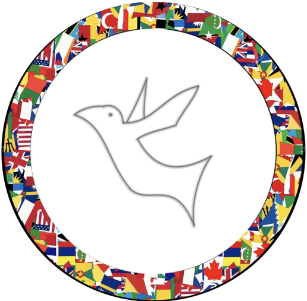

 Le collectif «mongulu» est né d’une volonté de promouvoir la création d’outils libres et adaptés aux besoins de la communauté camerounaise en France . Elle entend pour cela s’appuyer sur des personnes se sentant proches de cette communauté et voulant mettre à disposition de celle-ci leurs savoirs,savoir-faire numériques de façon bénévole.
Le collectif tire son nom de la hutte du peuple baka qui sont les représentants les plus nombreux du groupe communément appelé «pygmée». Ceux-ci sont connus pour avoir conservé dans une certaine mesure la forêt comme espace de vie privilégié. Les mongulu sont les huttes qu'ils construisent à l’occasion des déplacements afin de changer d’espace de chasse au cours de l’année. La hutte contient donc un ensemble d’outils servant la communauté baka. Inspirés de cela nous voulons construire mongulu comme cet espace où chaque membre de la communauté camerounaise peut piocher et retrouver un outil utile.
Devenir à un long terme, un acteur incontournable du numérique dans la communauté camerounaise en France avec un ancrage fort sur nos valeurs.
Afin de mener à bien sa vision, le collectif s’appuie sur des membres qui sont des personnes ayant adhéré au collectif par cooptation d’un membre. Le collectif est ouvert à toutes ceux et celles camerounais ou proches de cette communauté possédant des compétences numériques: développement, réseaux et infrastructures, données, Intelligence artificielle, ergonomie et interfaces, et enfin communication et médias etc. Une fois cette étape franchie, les adhérents sont conviés aux réunions mensuelles dans lesquels ils peuvent soit proposer de nouveaux projets,soit intégrer des projets existants ou tout simplement suivre leur évolution.Si la proposition d’un projet est totalement libre, celle-ci ne peut être intégrée dans mongulu que si elle remplit un certain nombre de critères parmi lesquels:
Ces critères sont statués sur le mode du consensus séance tenante. Le projet qui ne passe pas cette phase à la possibilité de retenter encore 3 fois sa soumission avant d’être définitivement refusé.
Une fois le projet accepté, celui-ci est intégré à l’espace github du projet mongulu et les membres désirant s’y investir y sont intégrés, ils forment alors un groupe de travail. Tous les investissements sont les bienvenues: ça peut être du partage d’expérience sur une problématique similaire, du code, de designs voire des conseils. Ces contributions seront mises en valeur lors de la réunion mensuelle où chaque groupe de travail présentera les développements réalisés. En cas de non contribution sur le projet pendant 4 premiers mois du maintainer, son projet sera automatiquement archivé.
Notre focus porte principalement sur la France néanmoins, nous envisageons de compter comme un acteur connu et reconnu de l'écosystème d'innovation numérique sur place. Pour ce faire, nous sommes d’ores et déjà rentrer en contact avec des incubateurs de startups numériques sur place comme JABASPACE ou ACTIVSPACES . L’un des axes que nous privilégions actuellement est la réalisation d’ateliers d’étonnement avec la communauté de ces incubateurs où les membres intéressés présenteraient un projet mongulu ou pas sur lequel ils ont travaillé afin d’éveiller le débat et des questions sur place. Ce sera aussi l’occasion pour eux de nous faire ce type de présentation afin de susciter chez nous aussi des réactions.